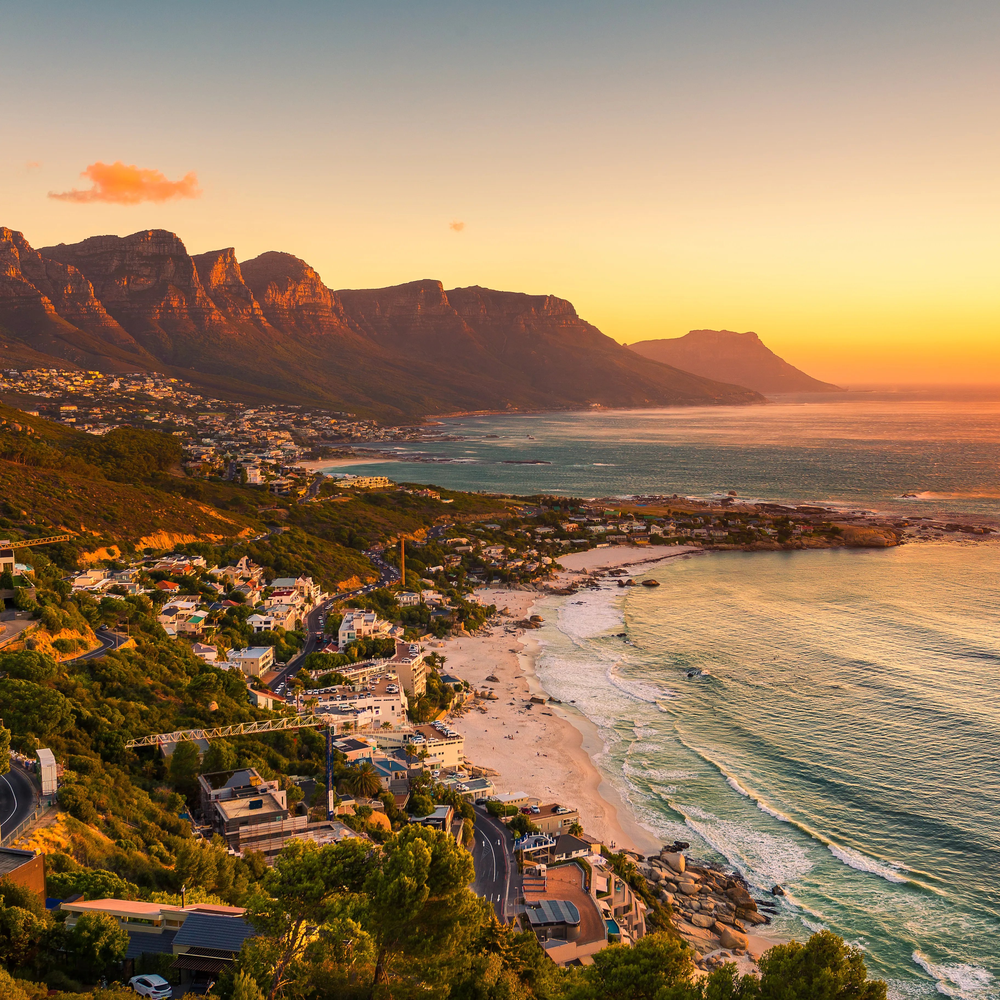
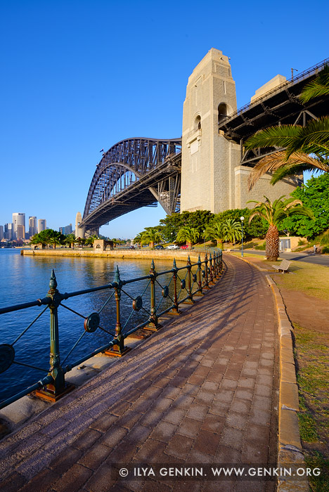
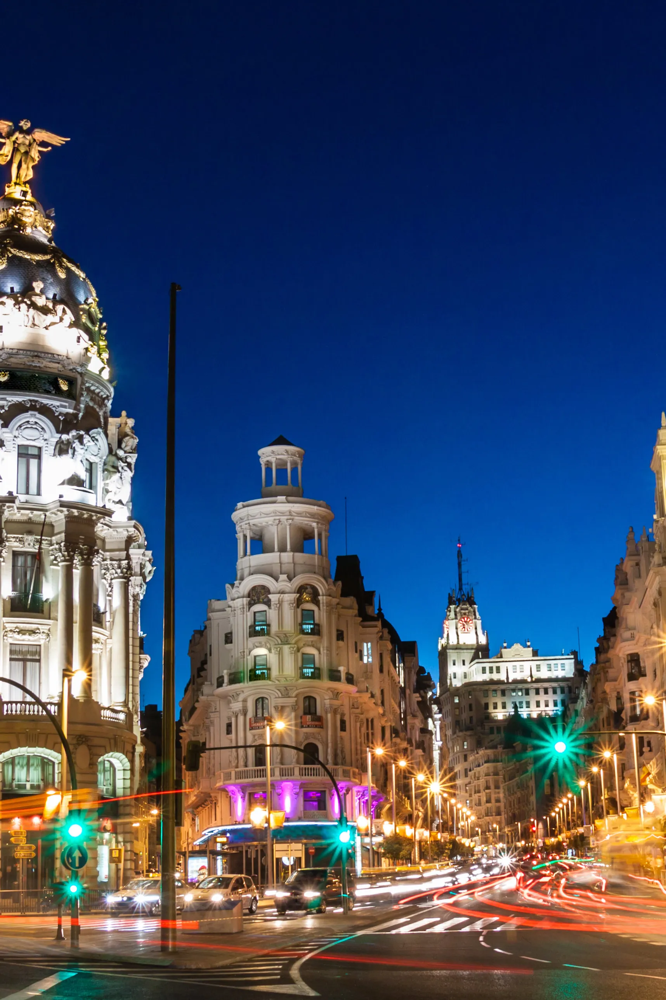

This are 5 places I'd like to visit. Link to homepage:
Italia
Roma

population: 2.8 million people
- Latitude: 41.9028° N
- Longitude: 12.4964° E
Roma, the capital of Italy, is renowned for its rich history and stunning beauty.
This ancient city, often referred to as the "Eternal City," boasts iconic landmarks like the Colosseum, the Vatican City, and the Pantheon.
Its charm lies in its blend of ancient ruins, Renaissance art, and vibrant street life,
offering a unique glimpse into the past and present of one of the world's most captivating cities.
South Africa
Eastern-Cape


population: 60 million people
- Latitude: 30.5595° S
- Longitude: 22.9375° E
South Africa is a diverse and vibrant country located at the southern tip of the African continent.
Known for its stunning landscapes, it boasts everything from sprawling savannahs and rugged mountains to beautiful coastlines.
The nation is renowned for its rich cultural heritage, with a mix of ethnic groups and languages,
including Zulu, Xhosa, Afrikaans, and English. South Africa is also famous for its historical significance, particularly in
the struggle against apartheid and the legacy of Nelson Mandela. Its economy is one of the most developed in Africa, and it offers a range of experiences,
from wildlife safaris in Kruger National Park to exploring the dynamic cities of Johannesburg and Cape Town.
Australia
Tasmania

population: 26 million people
- Latitude: 25.2744° S
- Longitude: 133.7751° E
Australia is a vast and diverse country located in the Southern Hemisphere,
known for its unique landscapes and vibrant cities. It features a mix of natural wonders,
including the Great Barrier Reef, expansive deserts, and lush rainforests. Australia is renowned for its wildlife,
including kangaroos, koalas, and wombats. Major cities like Sydney, Melbourne, and Brisbane offer a blend of cosmopolitan culture,
beautiful beaches, and thriving arts scenes. Additionally, Australia is rich in Indigenous history and culture, which adds to its distinctive character.
Thailand
Phuket


population: 71 million people
- Latitude: 15.8700° N
- Longitude: 100.9925° E
Thailand, located in Southeast Asia, is renowned for its vibrant culture, rich history,
and stunning landscapes. Known as the "Land of Smiles," it offers a mix of bustling cities like Bangkok,
with its ornate temples and vibrant street markets, and serene locales such as the beaches of Phuket and the islands of Koh Samui.
Thailands cuisine, famous for its bold flavors and street food, is a major attraction. The country also boasts lush jungles, majestic waterfalls, and ancient ruins, making it a diverse and captivating destination.
Spain
Madrid


population: 3.3 million people
- Latitude: 40.4637° N
- Longitude: 3.7492° W
Madrid, the capital of Spain, is a vibrant city known for its rich cultural heritage and lively atmosphere.
It's famous for its grand boulevards, historic landmarks, and world-class art museums, including the Prado
Museum and the Reina Sofía Museum. The city boasts lively plazas like Puerta del Sol and Plaza Mayor, as well as beautiful
parks such as El Retiro. Madrid's bustling nightlife, diverse cuisine, and charming neighborhoods make it a dynamic destination with a blend of historical charm and modern energy.